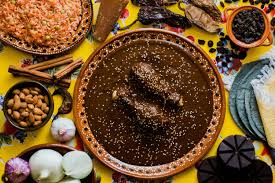

20.Oaxaca

- Platillo: Mole negro
- Ingredientes: Chiles secos, chocolate, almendras, ajonjolí, plátano, especias, jitomate, ajo.
- Historia: Uno de los siete moles tradicionales oaxaqueños, considerado un platillo ceremonial de raíces indígenas y coloniales.
- Dato curioso: El mole negro puede llevar más de 30 ingredientes y requiere más de un día de preparación.